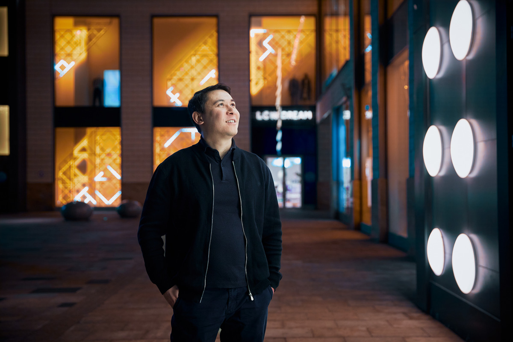

Батырхан Тогайбаев
Как казахстанский сервис по поиску врачей меняет рынок медуслуг и выходит в другие страны
forbes
11 февраля 2025

Стартап AIDENTIS
Казахстанский стартап AIDENTIS внедрит технологии ИИ в клиническую диагностику в стоматологии
digitalbusiness
17.02.2025

Роману Линейцеву
Казахстанец запустил мобильную игру и за прошлый год заработал $18 млн. История Grand Mobile
digitalbusiness
24.02.2025

Асылзат Исатаева
«Уже вложили 500 тысяч долларов».Казахстанка придумала
стартап,который помогает лечить зубы
как возникла идея AIDENTIS, сколько средств вложили в платформу и в
чем ее польза для обычного пациента
digitalbusiness
14.02.2025

Динар Бенсеитов и Мирас Турсуналиев
Как стартап QazTracker привлек инвестиции от Тимура Турлова
рассказали о трекерах по диагностике здоровья КРС и о том, насколько
сложно привлечь инвестиции в Agro Tech
kapital.kz
13.12.2024

Алибек Достияров и Ерсултан Сапар
AI-стартап казахстанцев привлёк $3,6 млн
Экс-консультант McKinsey Алибек Достияров и бывший инженер Apple
Ерсултан Сапар упрощают работу консалтинговых компаний
forbes.kz
6 февраля 2025
Асылжан Абдуллаев
Парень из Казахстана в 17 лет запустил стартап и хочет победить рак. Вот его история
digitalbusiness
10.02.2025

Чингиз Даулетбаев
Казахстанский стартапер рассказал, как получил $1 млн от известного инвестора из США
digitalbusiness
24.02.2025
Адмет Акхтер
«Минимальная оценка компании должна быть $5–6 млн». Казахстанец рассказал, как построить стартап в Сингапуре
digitalbusiness
25.02.2025
[CES 2025] Знакомьтесь — три стартапа, которые покоряют мир вместе с Samsung C-Lab
samsung.com
16.01.2025
Гульнара Дорошкевич
Казахстанский стартап ARLAN BIOTECH привлек $390 тыс. инвестиций.
Гульнара Дорошкевич
28 февраля 2025 год
Анжела Петровская
Казахстанцы придумали голосовых роботов, похожих на людей. Вот как работает технология.
digitalbusiness.kz
1 февраля 2025 год
Сергей Никитин
Казахстанский стартап BEKSAR и MOST Neobank запустили программу финансирования для малого бизнеса
digitalbusiness.kz
27.02.2025
Меруерт Сасенова
Арсен Томский заявил о планах вывести inDrive на IPO в США.
forbes.kz
20 февраля 2025
.webp)
Анель Курманова
Четыре стартапа из РК вошли в лонг-лист международной премии
kapital.kz
24 февраля 2025